~Super Hacks~
Para finalizar, les estare dando páginas que les ayudaran en la escuera. Espero que les guste.
Prepostseo
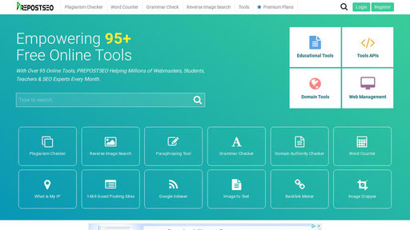
La herramienta de parafraseo Prepostseo es una herramienta eficiente cuando se trata de parafrasear un contenido escrito que ya se ha escrito en algún lugar para evitar el plagio.
Emaze
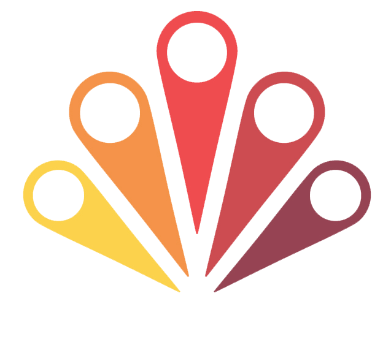
Emaze es una de esas aplicaciones web que debes mencionar, y es que es bastante útil, específicamente nos sirve a todos para crear presentaciones atractivas sin muchos conocimientos y totalmente desde el navegador, sin tener que instalar ningún software a nuestra computadora.
Gridzzly.com
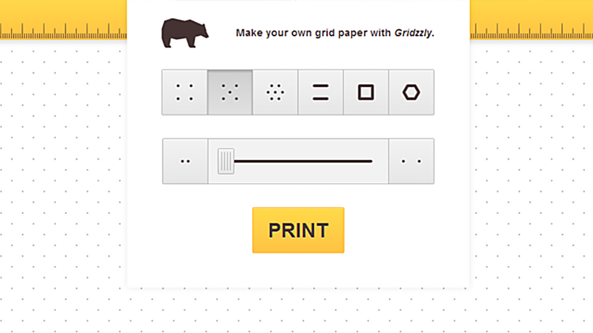
Gridzzly es una herramienta bellamente simple para cualquiera que use cuadrícula, gráfico o papel reglamentado. La aplicación web le permite ajustar el patrón que necesita y luego imprimirlo usted mismo.
Venngage
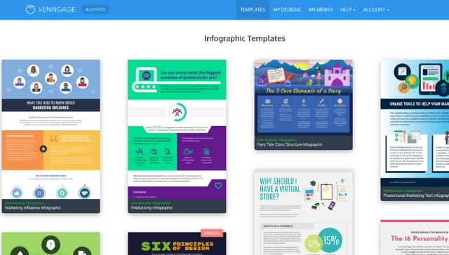
Venngage.com cuenta con más de 100 plantillas y una variedad de gráficos y otros elementos para crear al instante infografías, presentaciones, informes o publicaciones para redes sociales. El servicio es gratuito, sólo basta crear una cuenta para comenzar a crear una historia.
El sitio web ofrece a los periodistas y profesionales de la comunicación diferentes gráficos para importar datos y crear visualizaciones más interesantes, entre ellos: líneas, área, barras horizontales y verticales, series múltiples, nube de palabras, columnas, entre otros.
Dafont
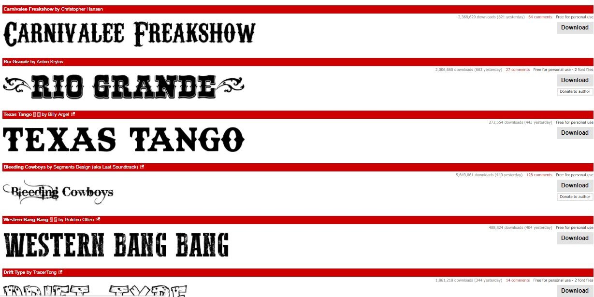
Dafont es una colección de tipos de letra (fuentes/fonts) que podrás usar en la redacción de tus artículos, diseño gráfico o cualquier actividad que requiera de un programa gráfico en diversos dispositivos.
Panzoid
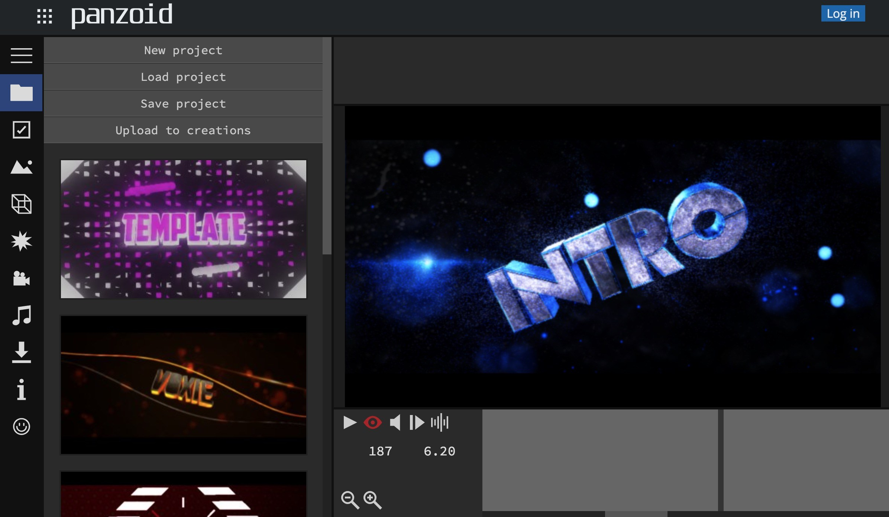
Panzoid es la versión del sitio web para Android que sirve para la creación y edición de foto y vídeo y que permite elegir entre miles de plantillas. Puedes Mirar también RenderForest aunque es algo distinto y conserva la marca de agua.
Pqdt open
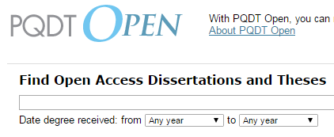
PQDT Open (ProQuest Dissertation & Thesis Open Access)
Acceso al texto completo de tesis y tesinas que publican en acceso abierto desde el repositorio de ProQuest (antes UMI). Los trabajos están disponibles inmediatamente. Los datos bibliográficos son más tarde accesibles desde Google Scholar.
Tarefa
La plataforma Tarefa, es una herramienta que permite conectar a un estudiante que tienen una pregunta en matemáticas, física y química, mediante un chat, con un tutor en cuestión de segundos.
Kapwing
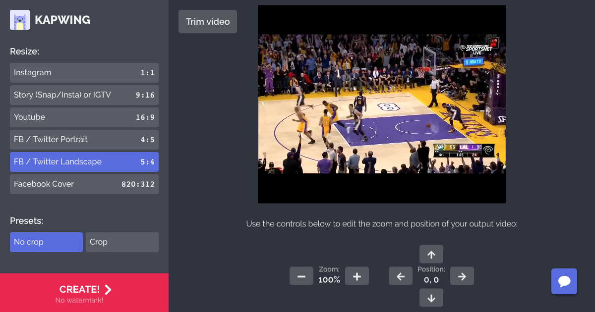
Se trata de Kapwing, una nueva aplicación web. Kapwing permite crear una imagen, GIF o vídeo meme con el contenido favorito del usuario y los primero que deben de hacer es cargar una imagen, GIF o vídeo directamente y lo pueden hacer subiéndola de su sistema indicando el path de la misma o copiando y pegando una URL.
Aprende.org
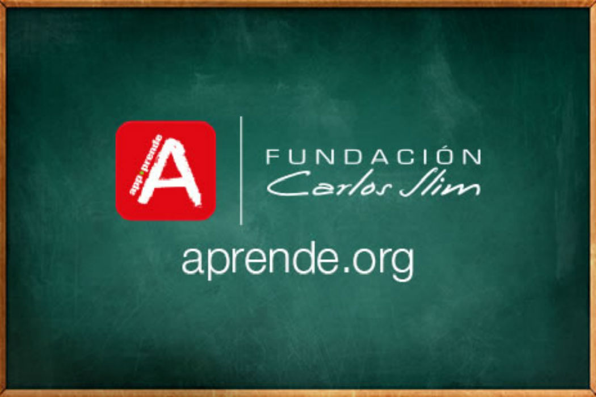
Desarrollada por Fundación Carlos Slim, aprende.org es una plataforma de aprendizaje, abierta y sin costo, que pone al alcance de todas las personas diversos contenidos educativos modernos y de calidad mundial en diferentes áreas del conocimiento.
Filadd
Filadd funciona como un dropbox comunitario en el que los usuarios cran su propio perfil llamado Biblioteca, donde incorporan información, consiguen resúmenes, parciales, fotos, apuntes, notas y exponen consultas.
flaticon
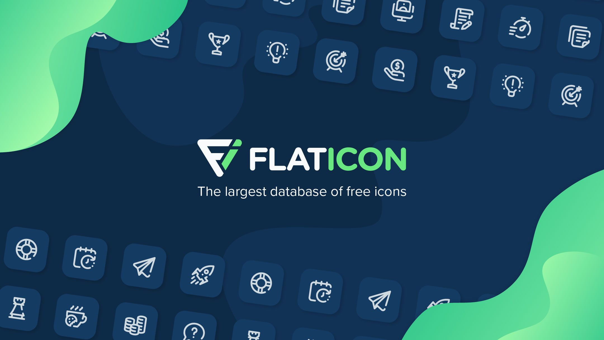
Flaticon es un nuevo proyecto de los creadores de Freepik que recopila iconos adaptados a formato vectorial (.SVG) para que se puedan usar en ilustraciones y dispositivos retina, por ejemplo. También está disponible como plug-in de Photoshop para los más vagos que prefieran buscar sin tener que salir de la aplicación de edición.
invidio
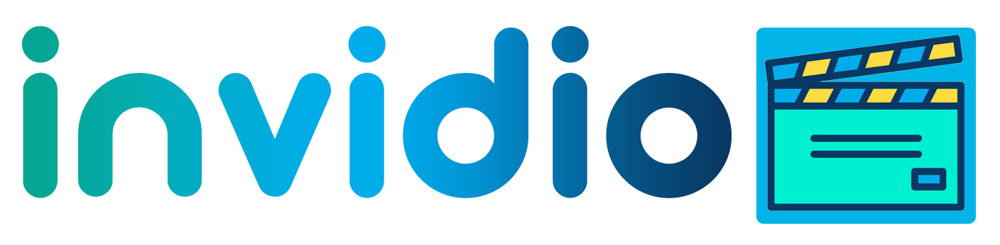
Invidious es una interfaz libre y ligera para YouTube que está hecha pensando en la libertad de software. Estas son algunas de sus características:
- No tiene anuncios
- Es software libre, código fuente bajo licencia AGPLv3
- Tiene un buscador
- No requiere cuenta de Google para guardar suscripciones
- Permite ver subtítulos
- Es muy personalizable
- Permite de poner vídeos desde Invidious en tú página
smodin
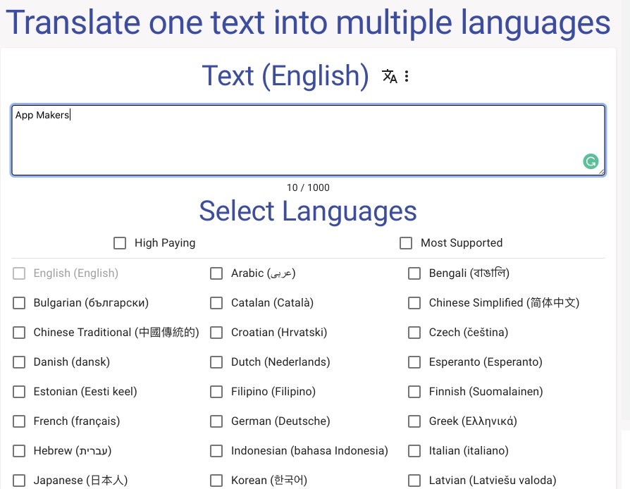
La reescritura de texto es útil para la optimización de motores de búsqueda (SEO), para hacer copias de libros o documentos, para duplicar contenido de nuevas formas y para ahorrar horas de trabajo humano.
free telepromter

slidesgo
SlidesGo es una plataforma lanzada recientemente por Freepik Company dónde puedes elegir y descargar plantillas gratuitas, editarlas para que se adapten mejor a tus proyectos y usarlas en diferentes plataformas. Además, cada modelo incluye una colección de gráficos, mapas e iconos que puedes usar y personalizar.
corrupt a file

lucidchart mapa
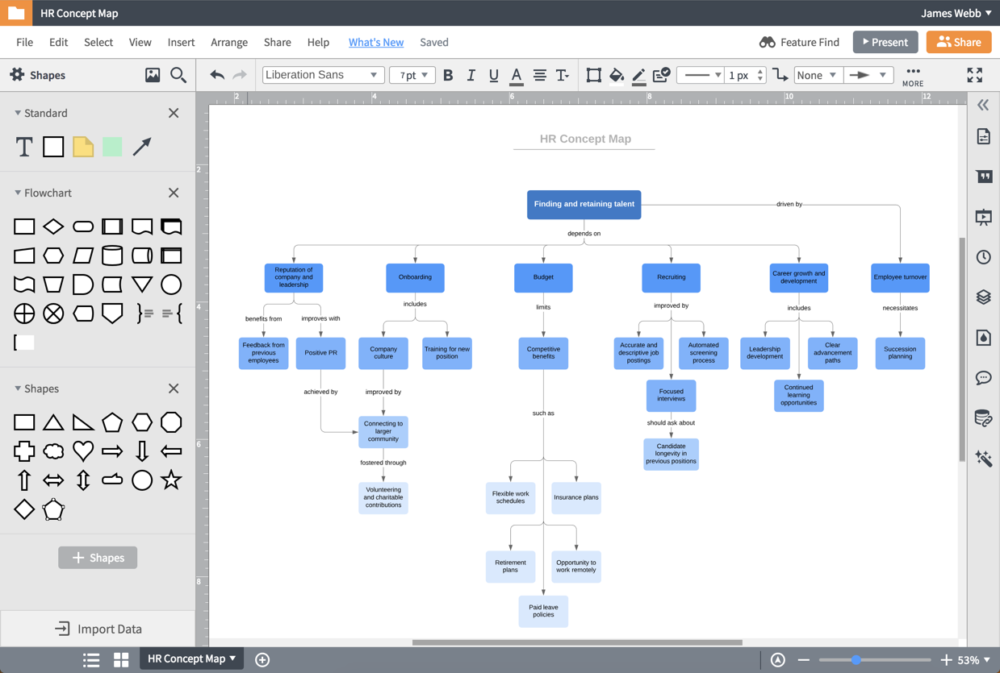
Lucidchart es una herramienta de diagramación basada en la web, que permite a los usuarios colaborar y trabajar juntos en tiempo real, creando diagramas de flujo, organigramas, esquemas de sitios web, diseños UML, mapas mentales, prototipos de software y muchos otros tipos de diagrama.
mindmeister
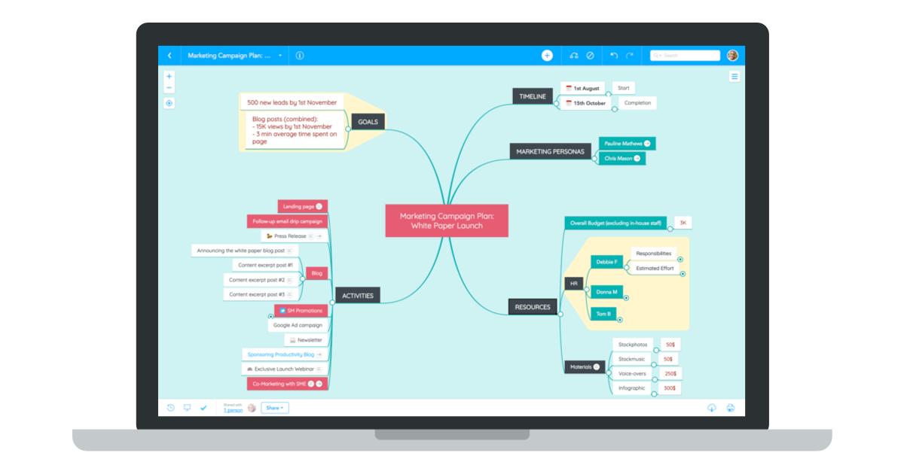
MindMeister es una herramienta de elaboración de mapas mentales en línea que te permite capturar, desarrollar y compartir ideas visualmente. Más de 9 millones de personas ya utilizan este galardonado editor de mapas mentales para intercambiar ideas, tomar notas, planificar proyectos y muchas otras tareas creativas.
text2mindmap
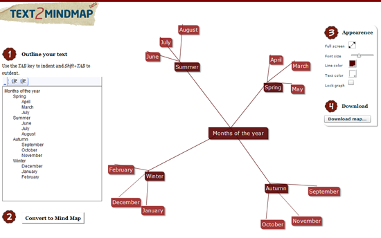
Text2MindMap es una herramienta web gratuita diseñada para realizar sencillos mapas conceptuales a partir de listas de texto.
creatly.com
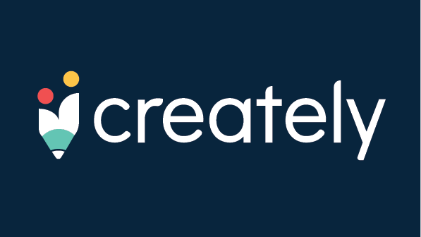
Creately es una herramienta de diagramación galardonada, reconocida por su facilidad de uso. Nuestra limpia interfaz combinada con características únicas como crear y conectar con un solo clic, lo ayuda a dibujar diagramas hasta 3 veces más rápido en comparación con el software de diagramación tradicional.
docsity
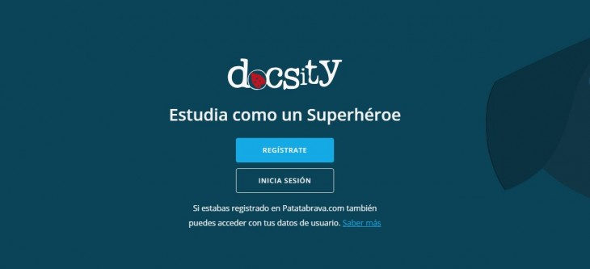
Docsity es una red social que nace en Italia, se trata de una plataforma que pone a disposición miles de resúmenes, ejercicios, tesis, tesinas y apuntes útiles a todas las personas relacionadas con el mundo de la educación
removw.bg
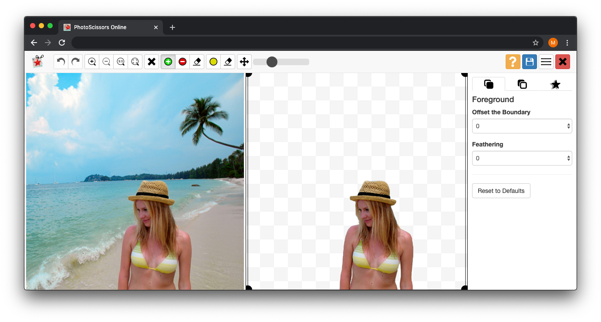
Separar un sujeto de un fondo puede ser un trabajo largo y tedioso dependiendo de la complejidad de la imagen. Sin embargo, una nueva página de internet busca resolver esta tarea en cinco segundos utilizando inteligencia artificial. Así es Remove.bg.
slidebean
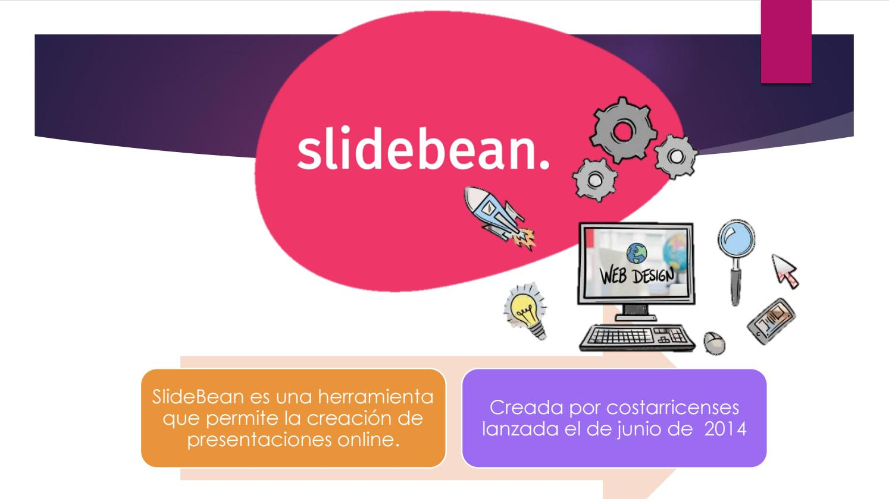
SlideBean es una herramienta que permite la creación de presentaciones online. ¿Cómo usar SLIDEBEAN? Para desarrollar la presentación, sólo hay que crear una cuenta en la plataforma e indicar si se realizará en línea, en un auditorio, una pequeña junta, o un salón de clases.
pdf drive
PDF Drive es un motor de búsqueda gratuito que te permite encontrar, previsualizar y descargar millones de archivos PDF en tus dispositivos. La aplicación ofrece, de una manera simple y fácil, el acceso a libros en inglés y en otros idiomas.
tesiunan
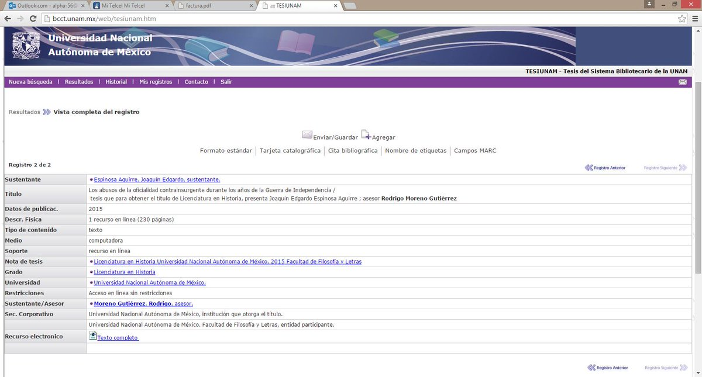
En 1986 la Dirección General de Bibliotecas, creó un programa que denominó "TESIUNAM", con el propósito de ordenar, registrar y microfilmar por medios automatizados las tesis tanto de licenciatura como de posgrado de la Universidad Nacional Autónoma de México, que recibe la Biblioteca Central.